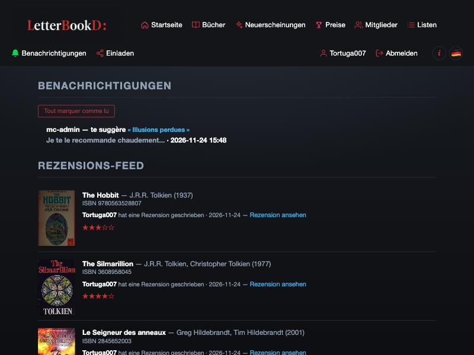

Benachrichtigungen
Wozu es dient: Alles bündeln, was dich persönlich betrifft: erhaltene Vorschläge anderer Mitglieder, Reaktionen auf deine Rezensionen und Kommentare unter deinen Rezensionen. Darunter der Strom aller aktuellen Rezensionen deines Clubs.

Ablauf
Die Seite hat zwei Bereiche. Oben „Benachrichtigungen“: eine Zeile pro Ereignis, mit dem Namen des Absenders, der Art der Aktion („schlägt dir vor“, „hat reagiert auf“, „hat kommentiert“) und einem Link zum betreffenden Buch bzw. zur Rezension. Die Schaltfläche „Alle als gelesen markieren“ entfernt die Anzeige an der Glocke.
Unten folgt der „Rezensionen-Stream“: die aktuellen Rezensionen, die in deinem Club veröffentlicht wurden, jeweils mit Cover, Buch, Buchautor, Name des Rezensenten und Sternenbewertung sowie einem Link „Rezension ansehen“.
Aktionsketten
Jede Zeile beschreibt einen Auslöser in der Oberfläche, das sich öffnende Modal/Formular und den erzielten Effekt.
| Auslöser | Modal / Felder | Effekt |
|---|---|---|
| Schaltfläche „Alle als gelesen markieren“ | POST-Formular. | Markiert alle deine Benachrichtigungen als gelesen. Die Glocke oben rechts wechselt von Grün zu Grau. Die Benachrichtigungen bleiben als Verlauf sichtbar, zählen aber nicht mehr als ungelesen. |
| Link in einer Benachrichtigung (Buchtitel, „Rezension ansehen“) | — | Öffnet den Kontext: Buchseite, mit Anker zur kommentierten Rezension. |
| Link „Rezension ansehen“ im Stream | — | Öffnet die Buchseite, positioniert auf der betreffenden Rezension. |